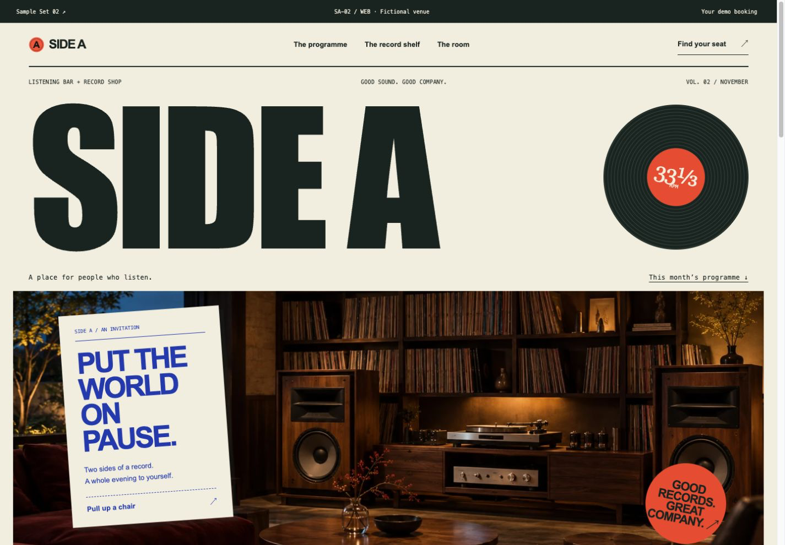
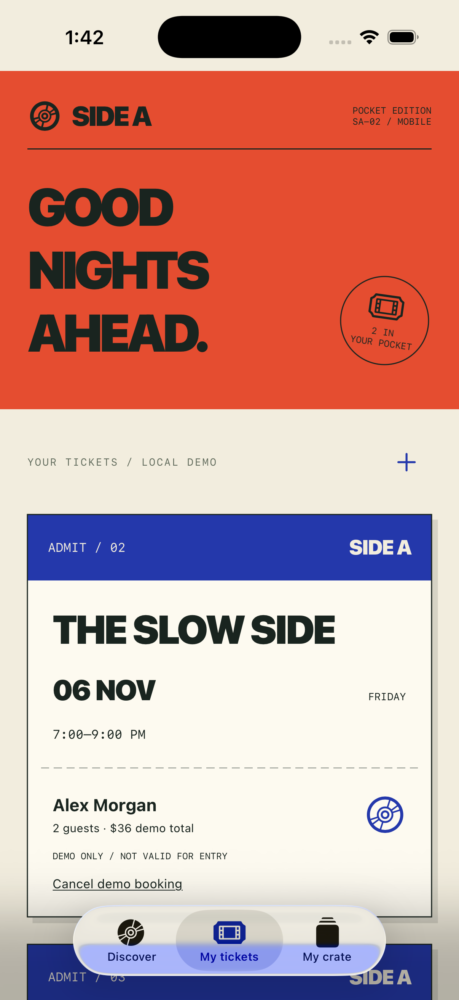
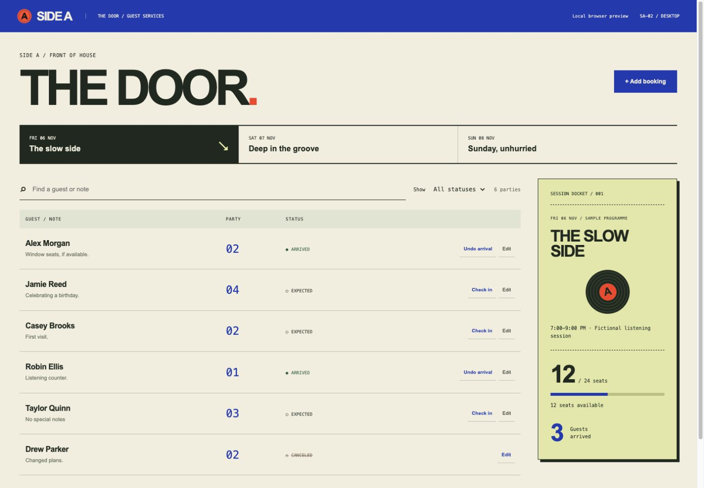

The listening room
A poster-led venue site with session filters, a local booking preview, downloadable demo tickets and a saveable record shelf.
SAMPLE SET 02 / SA-02 / NIGHT SHIFT
One listening room.
Three ways into the evening.
A fictional listening bar and record shop, expressed in paper cream, tomato red and cobalt blue. Explore the customer website, the native iPhone companion and the desktop guest list. Each works independently with local sample data.
Step into the website ↗
A poster-led venue site with session filters, a local booking preview, downloadable demo tickets and a saveable record shelf.

Discover sessions, keep demo tickets and save records. Native SwiftUI, offline persistence, and portable backup import/export.

A guest list for the people running the night. Bookings, check-in, capacity checks, search and local backup recovery.
PICK THE WORKFLOW. BORROW THE STYLE.
“I want SA-02 / Mobile tickets with the warm paper and forest ink from CF-01 / Web.” Keep the functional starting point and visual direction separate; the inquiry form records both.
Try that combination ↗All businesses, people, releases, schedules and prices are fictional. Illustrative imagery represents the sample venue. The apps do not synchronize; website and browser-preview data stays in that browser. Native apps store files locally. No customer accounts, checkout, payment, music playback or real reservations are connected.
Native checks cover iPhone Simulator and Apple silicon macOS. Mobile source is available to run in Xcode; there is no App Store download. Desktop source can be run locally; it is not a signed or notarized consumer release. Production integrations are scoped separately.
Public source · MIT license ↗